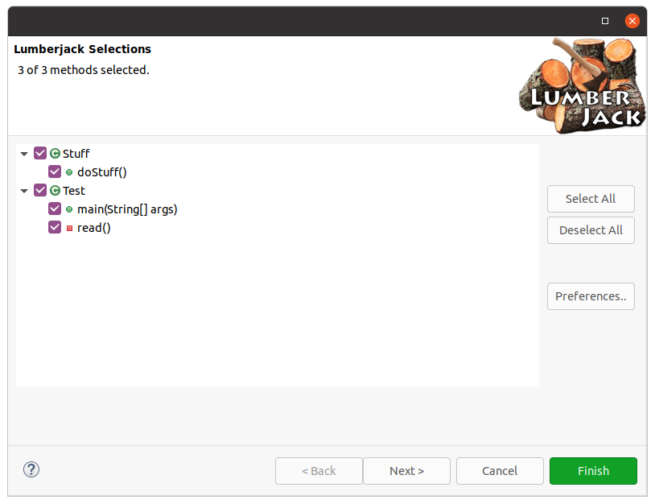
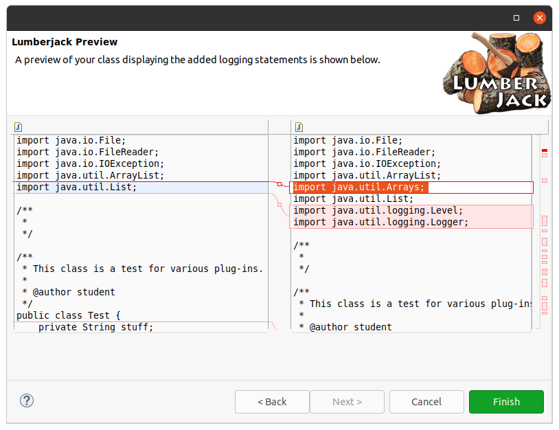

The Lumberjack plug-in interface is a wizard to interact with programmers. As with any wizard, pages are available to communicate with the programmer prior to generating logging statements. The following links explain how to get started with Lumberjack:
To understand the wizard it must first be opened. There are three points of access:
Each of these access points are available as long as there is a Java class in the current editor.
The wizard opens to the selections page.

This page has a tree view of classes and methods found in the Java class in the current editor. Methods which should be examined for generated logging should be selected. As a convenience, the root class element may be checked and will cause its methods to be selected. Since multiple classes may exist in the same unit, methods will appear as elements of the parent class.
To configure the logging statement preferences, select the Preferences.. button (see the Preferences documentation for more). Otherwise select either the Next button for the next wizard page, or select the Finish button to run the Lumberjack operation.

The preview page displays the Java class with the generated logging statements in a side-by-side view. This view highlights the differences in the original versus the modified unit. The changes may be altered or abandoned from this page, or select the Finish button button to apply all changes to the editor.
Be sure to review all generated logging statements and edit the content as needed.